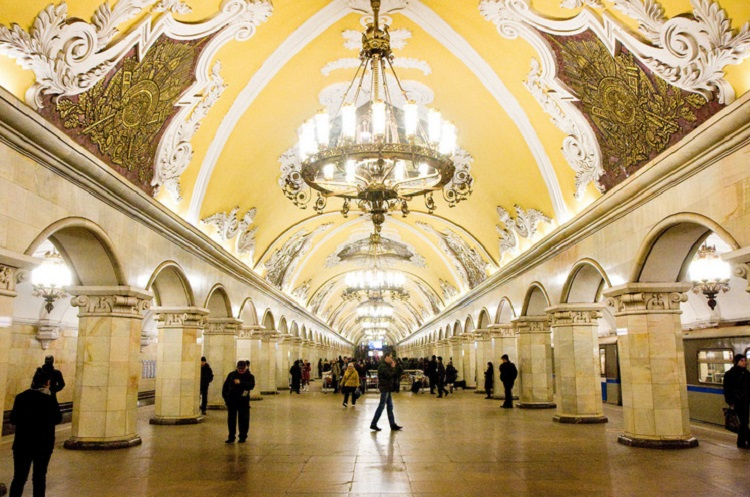

| Kremlj |
Kremlj (u prevodu tvrđava) je srce i jezgro Moskve iz koga se razvio čitav megapolis. U
feudalnom dobu bio je opasan zidovima sa kulama. U Kremlju su se nalazili knežev dvor,
saborna crkva i kuće plemstva. Njegove kule i zvonici su svedoci mnogih značajnih
događaja ruske istorije. Sastoji se od dvadeset kula, mahom iz 15. veka, a najlepša i
najveća se zove Spaska (visoka je 71m). |
|
| Crveni trg |
Crveni trg, jedan od najvećih trgova na svetu. Kako se glavne
moskovske ulice slivaju upravo ovamo, Crveni trg se često smatra središnjim moskovskim
trgom i srcem cele Rusije. Glavna znamenitost i simbol ovog trga, pa i čitave Moskve,
(možda i cele Rusije) je hram Sv. Vasilija Blaženog. |
|
| Hram Sv. Vasilija Blaženog |
Ovaj hram je sagradio ruski car Ivan IV. Vasiljevič Grozni za
vreme svoje okrutne vladavine (1561. godine) kao sećanje na osvajanje Kazanskog kanata.
Prepoznatljiv po svojim šarenim kupolama nalik na lilihipe i slatkiše, ovaj hram se
sastoji se od više manjih, međusobno povezanih kapela okupljenih oko jedne centralne.
|
|
| Boljšoj teatar |
Boljšoj teatar (u prevodu Veliko pozorište) je jedno od najprestižnijih pozorišta u
svetu, a čuveno je i po baletu i operi. Smatra se da je to
drugo, po veličini, pozorište u Evropi, a veća je Milanska skala.
Današnja zgrada je izgrađena 1824.godine na mestu na kome se ranije nalazilo pozorište
Petrovka, koje je izgorelo u požaru 1805.godine. Izgradio ga je arhitekta Andrej
Mihailov. |
|
| Moskovski metro |
Moskovski metro predstavlja deo savremene kulture Rusije. Jedan je od najstarijih u
Evropi i, svakako, najlepši i najraskošniji. Neke od njegovih stanica predstavljaju
prave muzeje i umetničke galerije. Najčuvenije od njih su: Majakovskaja, Kijevska,
Prospekt mira, Novoslobodskaja, Komsomolskaja… |

|
| Hram Hrista spasitelja |
Sa zapadne strane Kremlja se nalazi najveći pravoslavni hram na svetu, Hram Hrista
Spasitelja. Izgrađen je 1883. godine prema projektu arhitekte
Konstantina Tona. Gradili su ga istaknuti neimari i umetnici iz cele Rusije 44 godine, u
čast pobede nad Napoleonom. |
|
| Univerzitet Lomonosov |
Moskovski državni univerzitet Lomonosov je najveći i najstariji univerzitet u Rusiji,
osnovan 1755. godine na inicijativu Ivana Ivanoviča Šuvalova i Mihaila Vasiljeviča
Lomonosova naredbom ruske carice Jelisavete Petrovne 25. januara (12. januara po
gregorijanskom kalendaru). 25. januar se i danas
proslavlja kao Dan studenata u Rusiji.
|
|